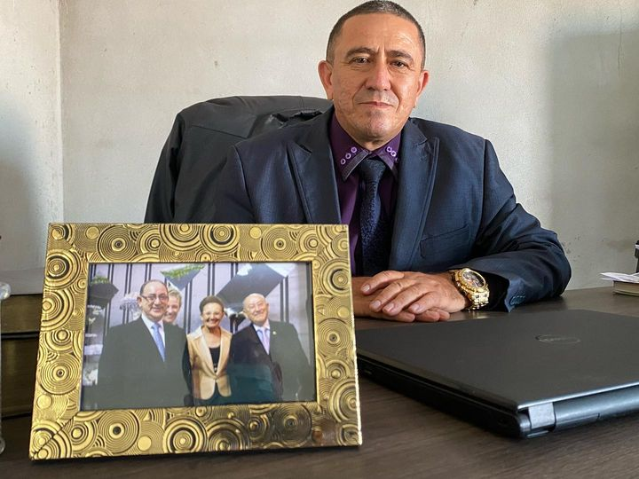

BRASIL
O Brasil, maior país da América do Sul, é uma terra de vasta diversidade geográfica, cultural e social. Com uma história marcada pela colonização portuguesa, independência em 1822 e a transição de uma economia agrária para uma nação industrializada, o Brasil reflete uma rica mistura de influências indígenas, europeias, africanas e asiáticas.
Culturalmente, o país é conhecido por sua música, dança e festas animadas, como o Carnaval do Rio de Janeiro. No entanto, enfrenta desafios sociais significativos, como desigualdade de renda, pobreza e violência urbana, enraizados em questões históricas como a escravidão.
Economicamente, o Brasil possui uma das maiores economias do mundo, com setores que vão desde agricultura e mineração até tecnologia e serviços. No entanto, a alta carga tributária, a burocracia e a infraestrutura precária são obstáculos ao desenvolvimento.
Ambientalmente, o Brasil abriga a maior parte da Floresta Amazônica e uma rica biodiversidade, mas enfrenta desafios como o desmatamento e a poluição, destacando a necessidade de equilibrar o desenvolvimento econômico com a preservação ambiental.
lobalmente, o Brasil desempenha um papel importante como líder regional e emergente, participando ativamente de organizações internacionais e buscando expandir suas relações diplomáticas e comerciais.

QUIXERAMOBIM
Quixeramobim, conhecida como o coração do Ceará, situa-se no centro geográfico do estado, integrando a região do Sertão Central, composta por quase 40 cidades. Esta é uma das cidades mais antigas, maiores e mais habitáveis da região, com cerca de 80 mil habitantes. Embora possua uma fábrica de calçados que oferece algumas oportunidades de emprego, a realidade da região é marcada por uma escassez de vagas de trabalho, o que torna a vida dos moradores bastante desafiadora.
Apesar da prosperidade relativa de Quixeramobim, as cidades menores ao seu redor enfrentam desafios significativos. Muitas dessas cidades, localizadas dentro da mata conhecida como "carrasco", têm até 2 mil habitantes e são de difícil acesso, estando até 70 km de distância da cidade principal. Essas pequenas localidades são extremamente fragilizadas e carecem de infraestrutura básica, incluindo igrejas ou qualquer tipo de denominação religiosa.
Na região, a presença evangélica é diminuta, com algumas cidades tendo apenas 2% de evangélicos. Em Quixeramobim, há várias igrejas, mas nas cidades menores e mais isoladas, a situação é muito diferente. A Assembleia de Deus tem se empenhado em levar a mensagem do Evangelho a essas áreas, mas enfrenta grandes desafios devido à falta de recursos e missionários.
Atualmente, existem 10 congregações sob a supervisão da Assembleia de Deus em Quixeramobim, com aproximadamente 300 membros. No entanto, duas congregações estão fechadas devido à falta de missionários e recursos. A realidade dessas comunidades é marcada pela precariedade, com famílias enfrentando dificuldades para encontrar emprego e sustentar suas necessidades básicas.
Os missionários enviados para essas áreas enfrentam desafios consideráveis. O trabalho missionário envolve não apenas a pregação do Evangelho, mas também o sustento das famílias dos missionários, a alimentação de crianças carentes, o apoio a outras famílias necessitadas, as despesas das igrejas e a expansão da obra local. Infelizmente, os recursos disponíveis são insuficientes para cobrir todas essas necessidades.
A missão da Assembleia de Deus em Quixeramobim e nas áreas circunvizinhas é vital, não apenas do ponto de vista espiritual, mas também social. A igreja tem sido um pilar de apoio para muitas famílias, oferecendo ajuda em momentos de crise e proporcionando esperança em meio às dificuldades.
Convidamos você a se juntar a nós nesta missão. Juntos, podemos levar a luz do Evangelho e um pouco de alívio para aqueles que mais precisam. Sua contribuição pode transformar vidas e fortalecer a presença de Deus em cada canto do Sertão Central.
Que Deus abençoe sua vida e multiplique suas bênçãos, permitindo que mais pessoas conheçam o amor de Cristo através do seu apoio.
MISSIONÁRIO

Pastor Erinaldo Bernardo
Batismo biblico
Novos irmão sendo batizados.
Alimentando quem precisa
Pessoas e crianças recebendo alimento.
Igreja de Choró Limão
A congregação de Choró Limão, é uma das maiores em número de membros, porém os irmão cultuam a Deus em uma pequena e quente garagem sedida por um dos irmãos. Então uma das maiores necessidades da região, é a construção desta congregação que com as ajudas de doações a fundação já esta pronta, porém falata erguer as paredes, telhado e acabamentos. Está é a situação atual desta congregação.
×

Entre em contato :
> Whatssap: (51) 9-9745-8133
> R. Afrânio Peixoto, 61 -
União, Estância Velha - RS, 93600-000, BR
> E-mail: adestancia@gmail.com.br